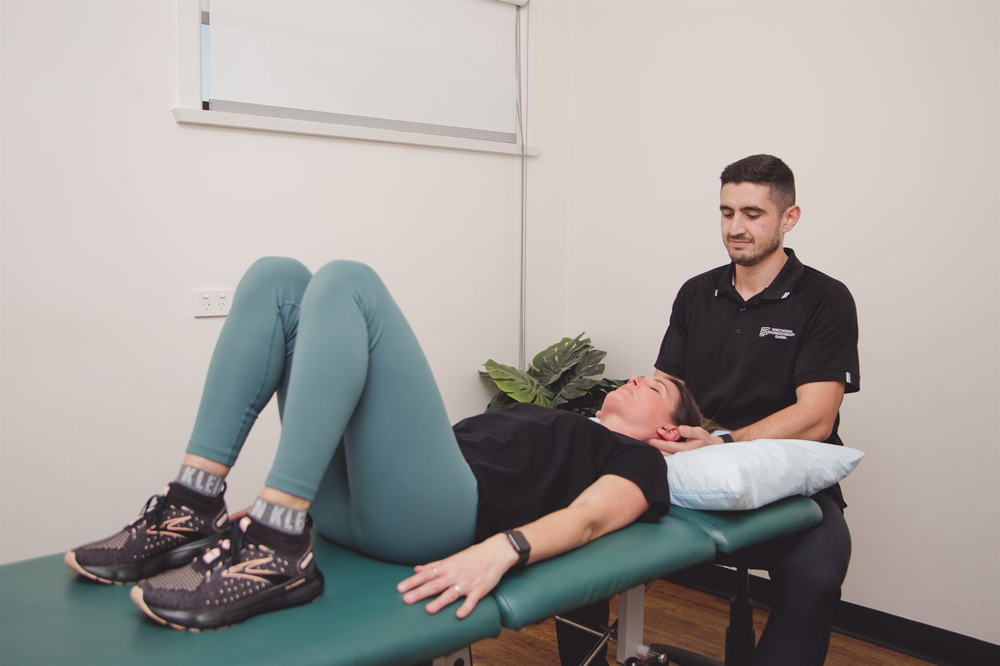
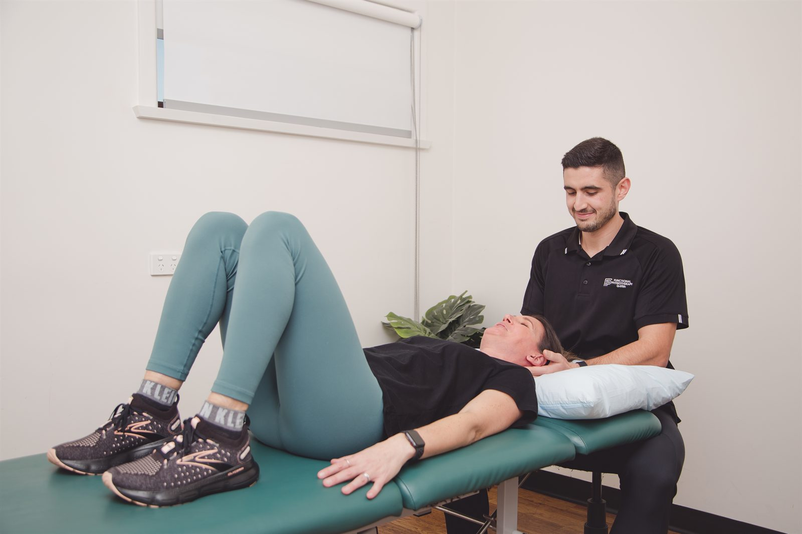

Much dizziness comes from the inner ear and many headaches come from the neck — and both respond well to physiotherapy. We assess carefully to find the cause, then treat it directly rather than managing symptoms indefinitely.

Because a large share of both come from structures a physiotherapist assesses and treats: the inner ear balance organs, and the upper cervical spine.
“Dizziness” is a single word covering several very different experiences. Spinning — the room moving around you — is vertigo, and points strongly toward the inner ear or the balance pathways. Light-headedness, the feeling that you might faint, more often relates to blood pressure or medication. Unsteadiness on your feet is different again, and frequently has more to do with strength, vision and sensation than with the ears. The first job of a good assessment is to work out which one you actually have, because the treatments do not overlap much.
Headaches divide in a similar way. Some originate in the neck — from the upper cervical joints and their muscular attachments — and these are the ones physiotherapy treats most directly. Some are primary headache disorders such as migraine, where the neck is often a contributor and an aggravator but not the cause. Telling them apart, and being honest about which is which, is what determines whether treatment helps.
What both have in common is that a lot of people put up with them for far longer than they need to. Positional vertigo in particular is often accepted as something to live with, when it is one of the most reliably fixable conditions we see.
Benign paroxysmal positional vertigo is the single most common cause of vertigo — and it is very treatable.
Inside each inner ear are small canals filled with fluid, which detect head movement. Also in the inner ear are tiny calcium carbonate crystals, which normally sit in a separate chamber where they help detect gravity and linear movement. In BPPV, some of those crystals become dislodged and end up in the canals, where they do not belong. Every time you move your head, they move the fluid, and your brain receives a strong signal of spinning that your eyes and body do not corroborate. The result is intense, brief vertigo triggered by particular head positions.
The pattern is distinctive: seconds to a minute of spinning brought on by rolling over in bed, lying down, sitting up, tipping your head back to a high shelf, or bending forward. Between episodes you often feel normal, or vaguely unsteady and cautious.
We confirm it with positional testing — most commonly the Dix-Hallpike test — which reproduces the vertigo briefly and, crucially, lets us watch the eye movement that identifies which ear and which canal are involved. We then use a canalith repositioning manoeuvre, such as the Epley, to guide the crystals out of the canal and back where they belong. It takes a few minutes, involves a sequence of head and body positions, and a large proportion of people are substantially better after one or two sessions.
Because BPPV can recur, we also teach you what to look for and what to do if it comes back.
When the balance system has been damaged or has stopped compensating properly, it can be retrained.
Not all dizziness is crystals in a canal. Vestibular neuritis and labyrinthitis can leave one side of the balance system underperforming after the acute illness has passed. Ageing reduces the quality of the signals from the inner ear, the eyes and the feet. Head injuries can disrupt the way those signals are integrated. In each case the brain can usually learn to compensate — but that compensation is a trainable process, and it happens faster and more completely with structured rehabilitation than by waiting.
Vestibular physiotherapy is that structured rehabilitation. It involves a careful assessment of eye movement, gaze stability, positional testing, balance in progressively harder conditions and walking. From that we build a specific exercise program: gaze stabilisation work, habituation exercises that deliberately and gradually expose you to the movements that provoke symptoms, and balance retraining. It is not comfortable in the early stages, and it works.
Dizziness and unsteadiness matter most in what they stop you doing. People reduce their walking, stop driving at night, avoid uneven ground and stop going out alone — and that avoidance itself accelerates the decline in balance and strength, which raises the risk of a fall. We treat the balance problem and the deconditioning together, with strength work alongside the vestibular exercises, because in older adults the two are inseparable.
Cervicogenic headache is pain referred to the head from the joints, muscles and nerves of the upper neck. It has a recognisable presentation: usually one-sided and consistently the same side, often starting at the base of the skull and spreading forward over the head or behind the eye, provoked by sustained neck postures or particular neck movements, and accompanied by neck stiffness and restricted rotation.
It responds well to treatment aimed at the neck itself — manual therapy to the upper cervical segments, dry needling to the muscles that refer into the head, deep neck flexor and scapular strengthening, and a genuine change to the postural loads that keep provoking it. For many people that combination reduces both the frequency and the intensity substantially.
Tension-type headache also frequently has a strong cervical and muscular component, and often improves with the same approach. Migraine is a different condition, and we are careful not to overclaim: migraine is best co-managed with your GP, but neck dysfunction is a common trigger and aggravator, and treating it can reduce how often attacks are set off.

Uncommon, but these ones should not wait for a physiotherapy appointment.
Call 000 if sudden dizziness or a severe headache comes with any of: slurred speech, facial droop, weakness or numbness on one side, double vision, difficulty swallowing, severe unsteadiness or an inability to walk, or a sudden “worst headache of my life”. These can indicate a stroke or other emergency, and time matters.
See your GP promptly, rather than booking physiotherapy first, if dizziness comes with new hearing loss or ringing in one ear, if you have fainted, if you have had a significant head injury, if a headache is progressively worsening over days to weeks, or if headaches begin for the first time after the age of fifty. If you are unsure, call the clinic — we will help you work out where you should be going.
Dizziness, balance and headache problems often sit alongside these.
Hands-on treatment and targeted exercise for back pain, neck pain and sciatica.
Read moreFunding pathwayGoal-based physiotherapy for NDIS participants, in the clinic or at home across the Illawarra.
Read moreServicePrecise needling of trigger points to release muscular tension and restore movement.
Read moreBook an assessment at our Dapto clinic and let us find out what is actually causing it.